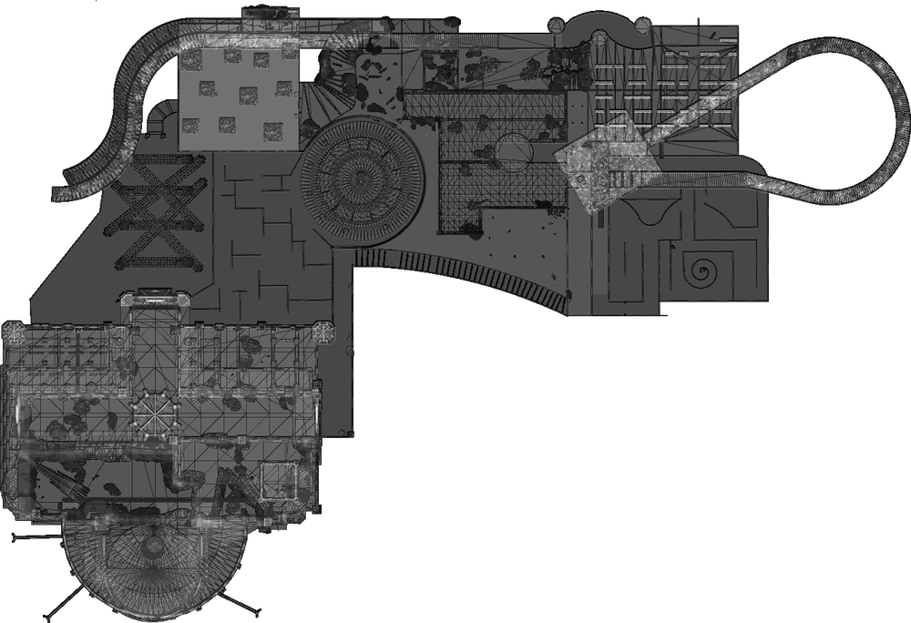

Level 7: Green Room
Information
The Grassrooms presents itself at first as a winding hallway with a grassy floor and sparse flowers. To your left, there are some windows that provide a view of a never-ending clouds, both above and below. As you venture deeper, the surroundings gradually transition into a more darker and enclosed setting. It looks like a giant greenhouse. On the walls, you might come across written inscriptions. And as you venture further, you'll eventually come across a Cathedral.
WalkThrough
-
Escape the spawn room by clicking on the power box and guessing the code through brute force.
-
Leave the room and run down the long corridor to reach Sector 3, the main section of the map.
-
In Sector 3, head to the storage room and unlock its door using the same power box method.
-
Inside the storage room, find and grab pesticides.
-
Next to an important corpse, find a note and a locked box. The note explains how to find the combination numbers for the locked box.
-
Deduce the order of the numbers based on the information from the note. Adjust the digits on the lock until the box opens, and retrieve the industrial scissors.
-
Now, start gathering chalices. First, find and collect the air chalice located in the maze.
-
Now, find and collect the water chalice. You will have to use the industrial scissors and pesticides to remove roots and plants blocking a door in the way.
-
Now go to the bodies room and use pesticides to destroy vines and drop hanging bodies. Find a computer and a note explaining how to find the password.
-
Examine the key card to determine the password information. The username is on the front, and the back has the information needed to solve the password.
-
Use the PC and type in "LOGIN " (replace "username" with the actual username, e.g., "LOGIN WHITE-RAT"). Enter the password (e.g., "c1818-0"). Type in "CD DISK01" and press enter. Finally, type "-START BACKUP" and wait for the computer to finish processing. Grab the backup drive from the PC.
-
Head to the Fire Chalice location.
-
After obtaining the Fire Chalice, go to the Power Room in Sector 5.
-
Insert the disk into the computer and complete the puzzle to open a garage door in Sector 5. Before leaving the Power Room, find and grab the metal detector.
-
Proceed to the cathedral and run to the note explaining the chalices' respective pedestals.
-
Use the metal detector to find the fourth final chalice inside the cathedral, the Earth Chalice.
-
Place the chalices on their appropriate pedestals in the center of the cathedral.
-
Go to each statue, representing the elements of the chalices. Flip the levers to point each statue in the direction of its corresponding element (Pegasus is Air, Lion is Earth, Mermaid is Water, Demon is Fire). When done correctly, a bell will fall from the ceiling. Head to the crash site and pick up the key.
-
Head back to the maze to unlock the gate using the key.
-
Have every player in the lobby step on the pressure plate to open the final door.
-
Solve the final puzzle by using red, blue, and green books to add up to the Roman numeral displayed on the wall.
-
Once the puzzle is solved, proceed through the hidden exit, jump off the building, and you've successfully escaped the Grass Corridors!